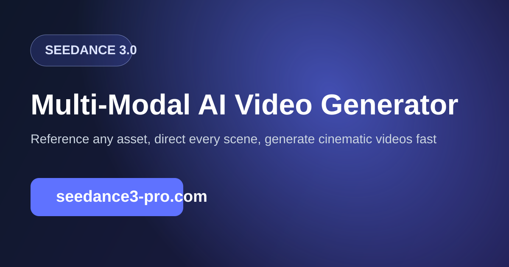

Both tools can produce strong visuals. The differences become clearer when you need consistent control across many outputs. This comparison looks at day-to-day production, where a single polished demo does not tell you enough.

Prompt controllability
Seedance workflows use explicit references for multimodal control, making it easier to carry the same campaign approach across several variants. Kling can produce strong individual results, though you may need to adjust the prompt wording to keep outputs consistent.
Reference transfer quality
When you use camera and style references together, Seedance-style reference mapping often helps the output stay closer to them. Consider this if your workflow depends on reusing references predictably.
Short-form ad production fit
For TikTok and Reels, reusable 9:16 prompt templates often matter more than a single cinematic clip. Seedance templates that put the hook first can make repeated ad testing easier.
Iteration speed and team ops
For a team, clear iteration logs help explain why an output changed and speed up creative work. When everyone uses the same prompt structure, Seedance workflows are easier to standardize. A model that supports that process is usually the better fit.
Decision summary
Choose according to how you work. Seedance-style workflows are often stronger when you need repeatable results and production guided by references. For more open-ended exploration with fewer operational constraints, test both models with your own benchmark prompts before deciding.